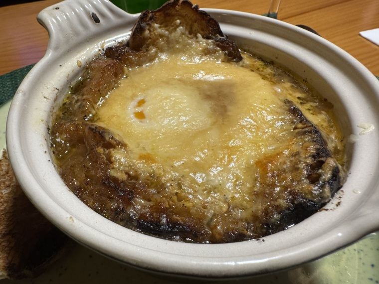

Onion Soup
Ingredients
4×
- 4 onions
- 50 g of butter
- 1 tbsp of oil
- 1 tbsp of flour
- 1 l of hot water
- 250 ml of white wine
- 6 slices of bread
- 4 small ovenproof bowls
- grated Comté

A winter classic that always pleases.
Preparation
Step 1
Peel and thinly slice the 4 onions.
Step 2
Cook them in 50 g of butter and 1 tbsp of oil until tender and golden brown.
Step 3
Sprinkle with 1 tbsp of flour, pour in 1 l of hot water and 250 ml of white wine, and season.
Step 4
Cover and simmer gently for 20 minutes.
Step 5
Toast 6 slices of bread.
Step 6
Place the slices at the bottom of 4 small ovenproof bowls.
Step 7
Sprinkle with some grated Comté. Pour the soup over.
Sprinkle with more cheese and grill until golden.
Tips
-
Use stock instead of water.
-
Spread mustard on the bread slices.
-
Crack an egg into the bowl of soup before adding the grated cheese.